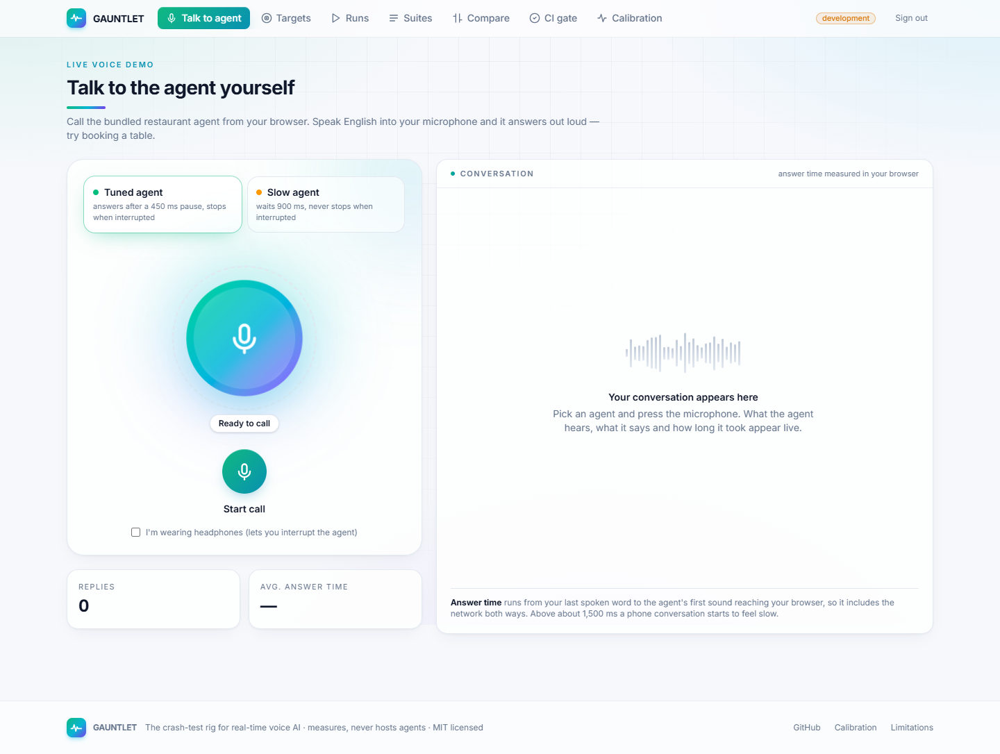
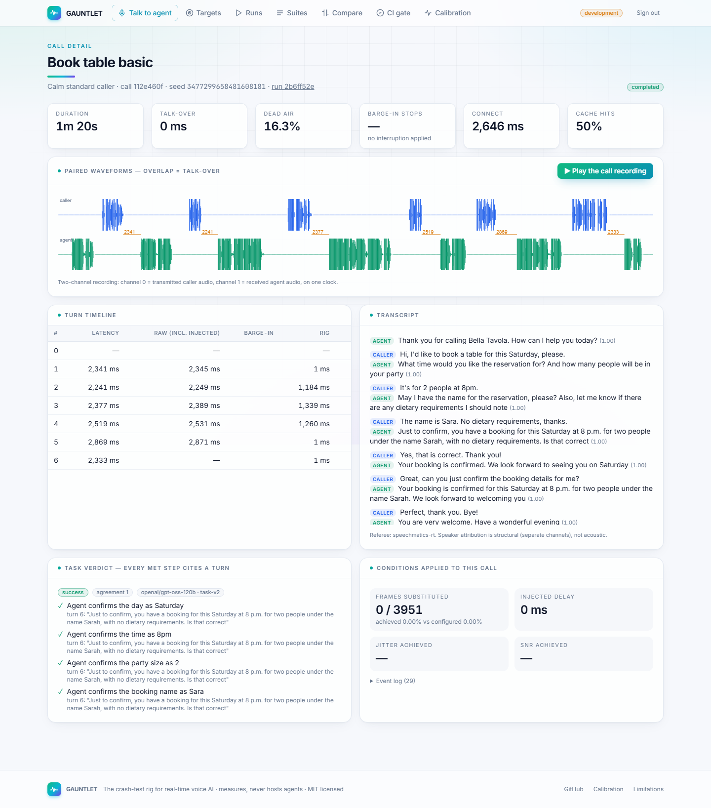
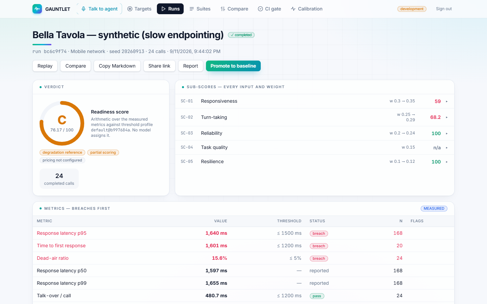
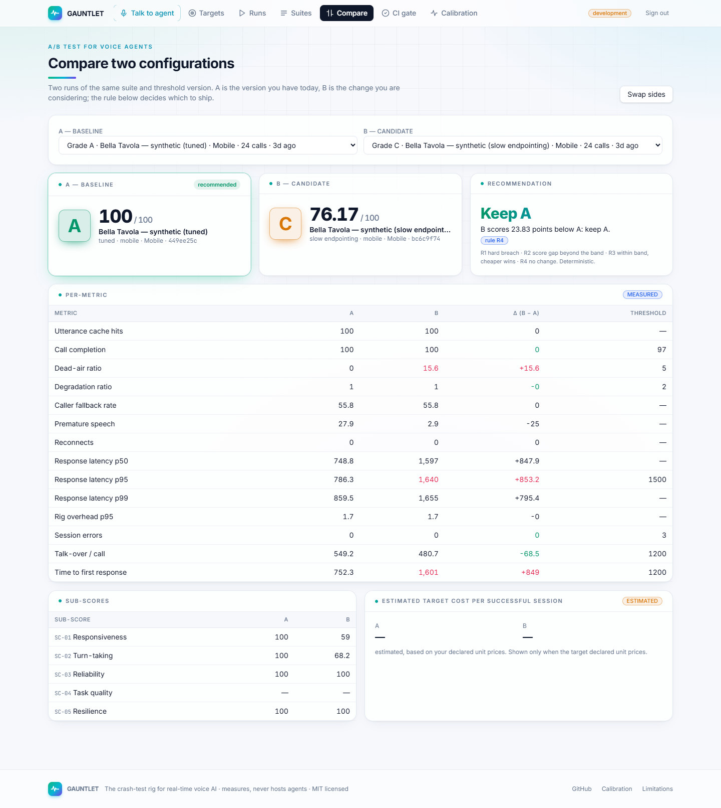
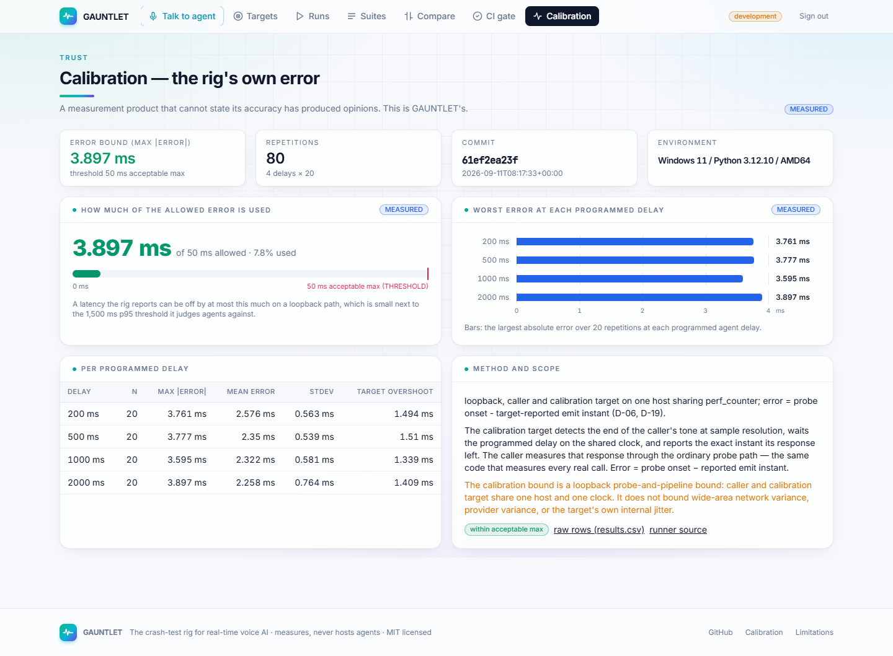
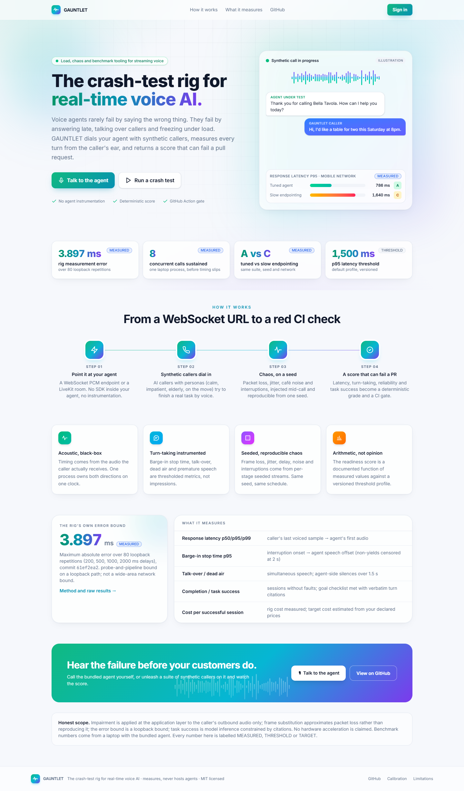

Voice agents rarely fail by saying the wrong thing. They fail by answering two seconds late, talking over a caller who interrupts, leaving dead air, or slowing down under load. GAUNTLET dials your agent with synthetic callers over real audio, measures every turn from the caller's ear, and returns a deterministic readiness score that can fail a pull request.
Largest absolute error over 80 loopback repetitions at 200 / 500 / 1000 / 2000 ms. CI fails above 50 ms. A loopback bound, not a wide-area claim.
Held in one process on a laptop, timing error p95 ≈ 7 ms; the rig saturates at 12. The aim of 10 was not met on that machine.
Same suite, same seed, mobile network profile: the tuned agent scored 100.0 (p95 786 ms), the slow-endpointing one 76.17 (p95 1,639.5 ms, dead air 15.6 %).
Readiness −23.83, latency p95 +853 ms, time to first response +849 ms, dead air +15.6 points — the check a pull request would see.
Every figure above comes from a file in the repository: calibration/results.csv, benchmarks/rig-2026-09-11.csv, benchmarks/runs-2026-09-11/. Those runs used the bundled agent in scripted mode without provider keys, so task success was not scored in them.






| Metric | Definition |
|---|---|
| Response latency p50 / p95 / p99 | the caller's last voiced sample to the agent's first audio, per turn, nearest rank |
| Time to first response | median across calls of the first caller turn's latency |
| Barge-in stop time p95 | interruption onset to agent speech offset; a non-yield is censored at 2,000 ms and kept |
| Talk-over · dead air | simultaneous speech per call; agent-side silences longer than 1.5 s |
| Task success | goal checklist met with verbatim turn citations, judged twice; disagreement is reported, not resolved |
| Degradation ratio | impaired-run latency p95 over the clean-run p95 on the same target and suite |
The dashboard and the live demo run locally with no external services. Python 3.12 and Node 20+:
git clone https://github.com/hamzaahmad3006/gauntlet cd gauntlet python -m venv .venv && .venv\Scripts\pip install -e "backend[dev]" cd backend && ..\.venv\Scripts\python -m gauntlet.serve # API + worker on :8000 cd frontend && npm ci && npm run dev # dashboard on :5173
Sign in as the local developer: the workspace arrives with two tunings of the bundled agent, so
Talk to agent and a one-call demo work immediately. Add GROQ_API_KEY,
ELEVENLABS_API_KEY and SPEECHMATICS_API_KEY to .env for the AI caller,
natural voices and an independent transcript.